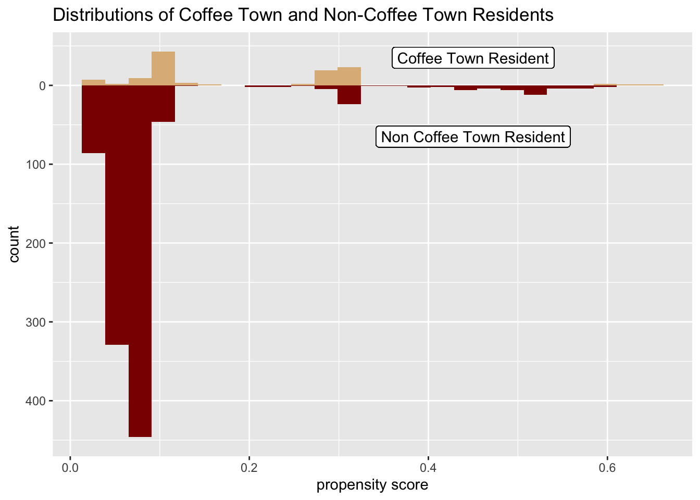
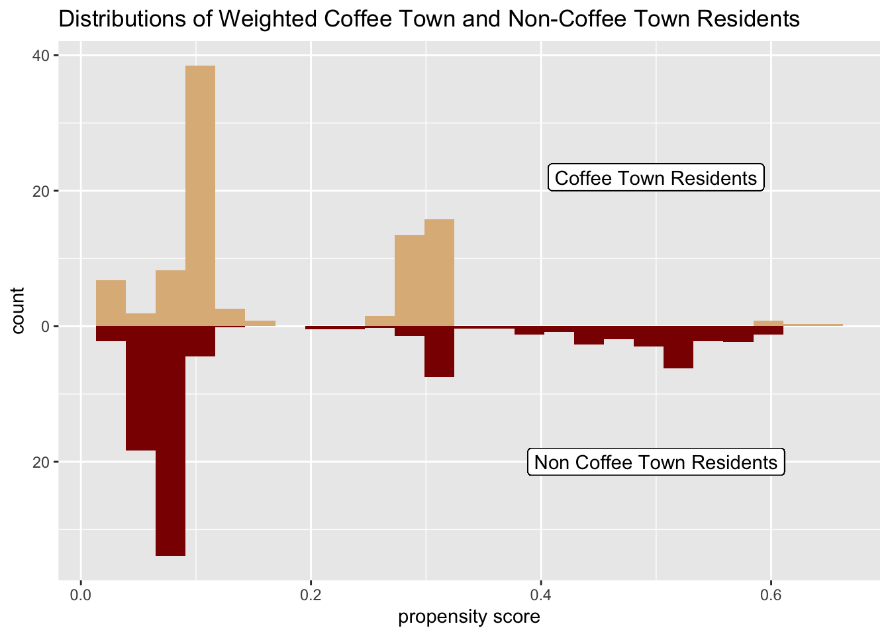
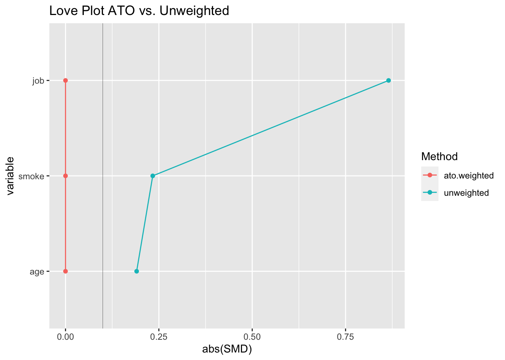
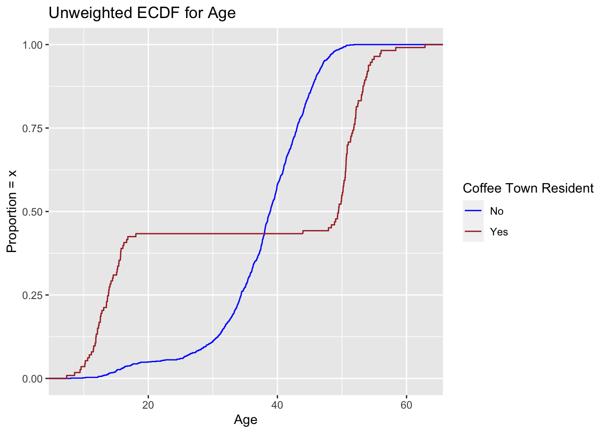
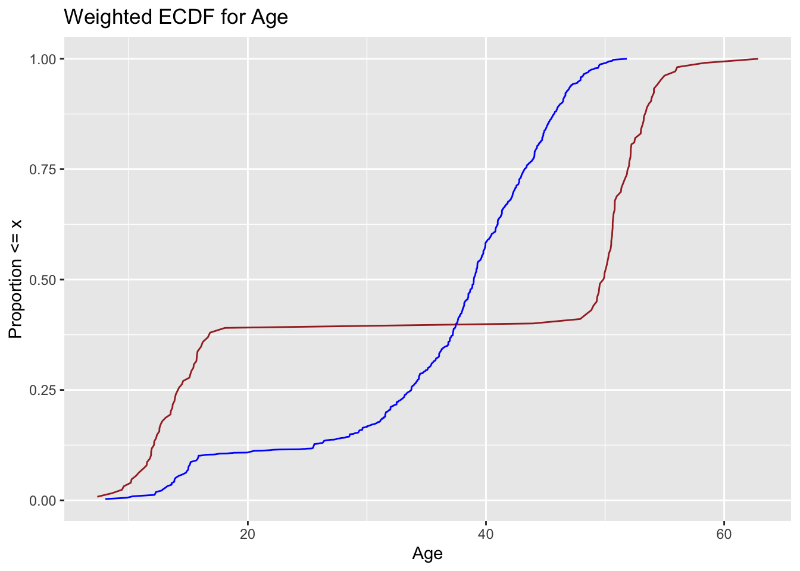
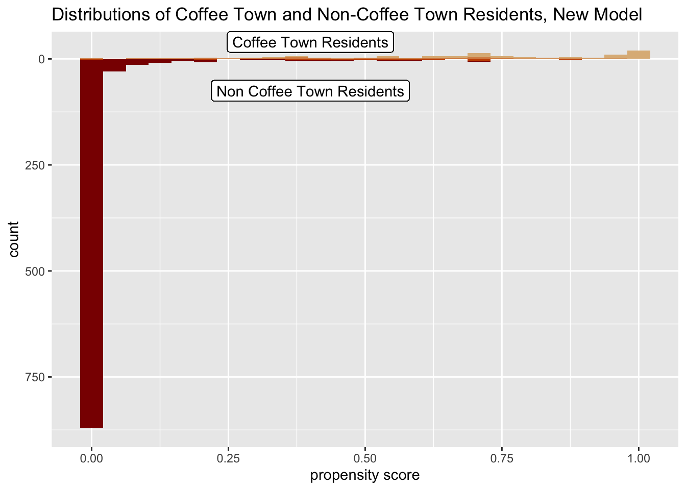
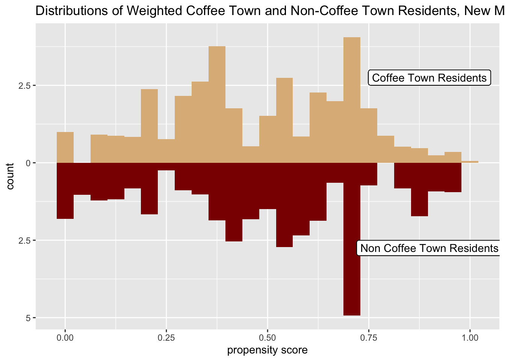
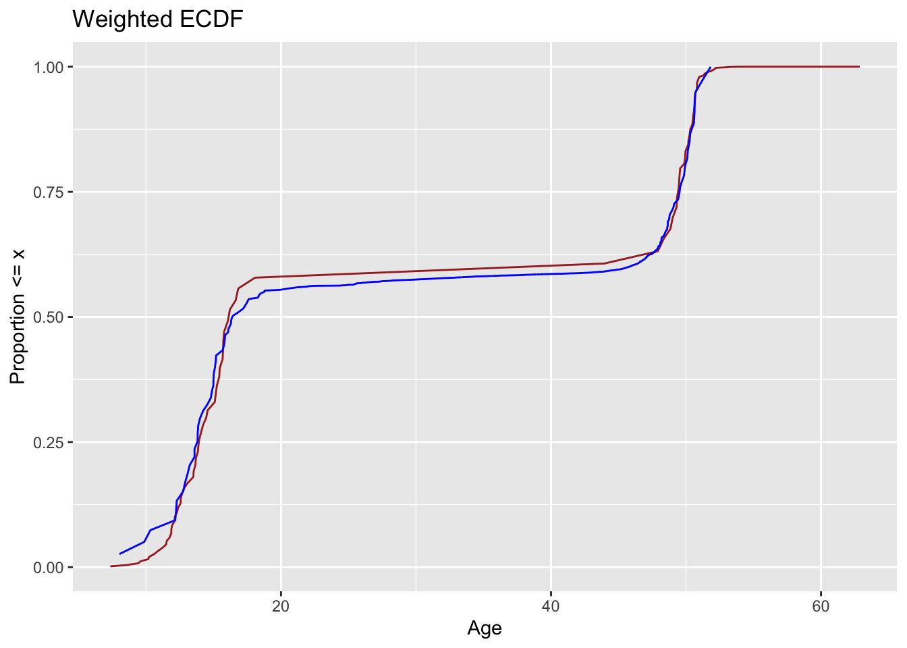

library(tidyverse)
library(smd)
library(survey)
library(gtsummary)
library(ggplot2)
library(broom)You were contacted by the Coffee Company to assess whether people who live in Coffee Town consume more coffee than a neighboring town. The Coffee Company provided you with the following DAG to describe their assumed relationship between variables they have collected between the two towns. They think that smokers are more likely to live in the Coffee Town, they think more people with difficult jobs live in Coffee Town, and they think that age also predicts which town you live in. Additionally, they suspect that age, whether you smoke, and the difficulty of your job influences the number of cups of coffee and individual drinks. They’ve asked you to calculate the average causal effect for the “equipoise” population, that is the population of individuals who reasonably could live in either town.
ctdata = read.csv("coffee_town_df-copy.csv")
colnames(ctdata)## [1] "coffee_town" "cups_of_coffee" "age" "job"
## [5] "smoke"length(ctdata[,1])## [1] 1100dim(ctdata)## [1] 1100 5length(filter(ctdata, coffee_town ==1)[,1])## [1] 113We have a dataframe of 1100 observations with 5 variables each. We have captured whether the individual lives in Coffee Town (“coffee_town”), the number of cups of coffee that the individual drinks per day (“cups_of_coffee”), the age of the individual (“age”), the level of difficulty of the individual’s job (“job”), and whether the individual smokes (“smokes”). There are 113 individuals in the exposure, so 113 who live in Coffee Town.
table1 = ctdata %>% tbl_summary(
by = coffee_town,
#include = c("cups_of_coffee", "age", "job", "smokes"
) %>%
add_overall()
table1| Characteristic | Overall, N = 1,1001 | 0, N = 9871 | 1, N = 1131 |
|---|---|---|---|
| cups_of_coffee | |||
| 0 | 92 (8.4%) | 43 (4.4%) | 49 (43%) |
| 1 | 104 (9.5%) | 104 (11%) | 0 (0%) |
| 2 | 461 (42%) | 461 (47%) | 0 (0%) |
| 3 | 352 (32%) | 350 (35%) | 2 (1.8%) |
| 4 | 86 (7.8%) | 29 (2.9%) | 57 (50%) |
| 5 | 4 (0.4%) | 0 (0%) | 4 (3.5%) |
| 6 | 1 (<0.1%) | 0 (0%) | 1 (0.9%) |
| age | 39 (34, 44) | 39 (34, 43) | 49 (14, 52) |
| job | |||
| easy | 760 (69%) | 707 (72%) | 53 (47%) |
| hard | 212 (19%) | 200 (20%) | 12 (11%) |
| none | 128 (12%) | 80 (8.1%) | 48 (42%) |
| smoke | |||
| current | 55 (5.0%) | 53 (5.4%) | 2 (1.8%) |
| former | 64 (5.8%) | 60 (6.1%) | 4 (3.5%) |
| never | 981 (89%) | 874 (89%) | 107 (95%) |
| 1 n (%); Median (IQR) | |||
Without weights, we are comparing 987 individuals to 113. The distributions among the two cities for each category does not seem the same, so comparisons are superficial at best. The distribution of coffee drunk by the Coffee Town residents is bimodal, divided between no coffee consumption and more extreme 4 cup habits. However, both of these consumption levels account for a small proportion of the overall population. Coffee Town residents have a larger spread of ages, which suggests that there are more generations present. Coffee Town seems to be populated with no or small job difficulty, while the non exposure has easy and hard jobs. The smoking distributions are more difficult to compare.
# get propensity scores and add them to df
# glm for unweighted
glm1 = glm(coffee_town ~ age + job + smoke,
data = ctdata,
family = binomial())
# adding propensity score to df
ctdata = glm1 %>% augment(type.predict = "response",
data = ctdata)
# prepare data for mirror plot
df_plot_ps = ctdata %>%
tidyr::pivot_wider(names_from = coffee_town,
values_from = .fitted,
names_prefix = "coffee_town_p")# plot
ggplot(df_plot_ps)+
geom_histogram(bins = 25,
aes(x = coffee_town_p1),
fill = "burlywood")+
geom_histogram(bins = 25,
aes(x = coffee_town_p0,
y = -stat(count)),
fill = "dark red")+
scale_y_continuous("count", label = abs) +
scale_x_continuous("propensity score") +
geom_label(
label = "Coffee Town Resident",
# x and y gives where the label will land
x = 0.45,
y = 35,
) +
geom_label(
label = "Non Coffee Town Resident",
x = 0.45,
y = -65
) +
labs(title = "Distributions of Coffee Town and Non-Coffee Town Residents")
The population of non-Coffee Town residents dwarfs that of Coffee Town. While there look to be two modes for each population on the left and center, Coffee Town’s distribution does not seem to reflect the third mode on the right.
# add ato weights to ctdata (orig df)
ctdata = ctdata %>%
mutate(wt_ato = (1-coffee_town)*.fitted + coffee_town * (1 -.fitted))We will be estimating the Average Treatment Effect of the Overlap population. We are weighting individuals to reflect those in the middle or “overlap” of the two populations. We are trying to weight those who could reasonably live in either location highly, and give those with a strong proclivity for one location a near zero weight. We will then calculate the estimated average treatment effect among this population.
# create survey object to contain weights
svy_des_ato = svydesign(
ids = ~1,
data = ctdata,
weights = ~wt_ato
)
table1_ato = svy_des_ato %>%
tbl_svysummary(by = coffee_town,
include = c("cups_of_coffee", "age", "job", "smoke")) %>%
add_overall()
table1_ato| Characteristic | Overall, N = 1821 | 0, N = 911 | 1, N = 911 |
|---|---|---|---|
| cups_of_coffee | |||
| 0 | 45 (25%) | 10 (11%) | 36 (39%) |
| 1 | 9 (4.7%) | 9 (9.4%) | 0 (0%) |
| 2 | 38 (21%) | 38 (42%) | 0 (0%) |
| 3 | 34 (19%) | 32 (35%) | 2 (2.0%) |
| 4 | 52 (29%) | 3 (3.4%) | 49 (54%) |
| 5 | 4 (1.9%) | 0 (0%) | 4 (3.9%) |
| 6 | 1 (0.5%) | 0 (0%) | 1 (0.9%) |
| age | 41 (20, 50) | 39 (34, 43) | 50 (14, 52) |
| job | |||
| easy | 96 (52%) | 48 (52%) | 48 (52%) |
| hard | 22 (12%) | 11 (12%) | 11 (12%) |
| none | 65 (35%) | 32 (35%) | 32 (35%) |
| smoke | |||
| current | 4 (2.1%) | 2 (2.1%) | 2 (2.1%) |
| former | 7 (4.1%) | 4 (4.1%) | 4 (4.1%) |
| never | 171 (94%) | 86 (94%) | 86 (94%) |
| 1 n (%); Median (IQR) | |||
To compare the overlap population, the sample sizes are lower for both populations, with just 91 individuals apiece. The levels of coffee consumption for non Coffee Town residents is still a more gradual distribution, whereas Coffee Town still seems to drink no coffee at all or a considerable amount. The job intensities appear distributed equally among the two populations, as does smoking.
# mirrored histogram!
ggplot(df_plot_ps)+
geom_histogram(bins = 25,
aes(x = coffee_town_p1),
fill = "burlywood")+
geom_histogram(bins = 25,
alpha = .5,
aes(x = coffee_town_p1,
weight = ctdata$wt_ato),
fill = "chocolate")+
geom_histogram(bins = 25,
aes(x = coffee_town_p0,
y = -stat(count)),
fill = "dark red")+
geom_histogram(bins = 25,
alpha = .5,
aes(x = coffee_town_p0,
y = -stat(count),
weight = ctdata$wt_ato),
fill = "darkorange")+
scale_y_continuous("count", label = abs) +
scale_x_continuous("propensity score") +
geom_label(
label = "Coffee Town Resident",
# x and y gives where the label will land
x = 0.45,
y = 35,
) +
geom_label(
label = "Non Coffee Town Resident",
x = 0.45,
y = -65
) +
labs(title = "Distributions of Coffee Town and Non-Coffee Town Residents")To capture the overlap population, it seems that individuals from both towns were down-weighted. There are few that could likely belong to both populations. In order to see the results of the weighting, the following histogram displays only the weighted propensity scores.
# Weighted only hist, base model
ggplot(df_plot_ps)+
geom_histogram(bins = 25,
aes(x = coffee_town_p1,
weight = ctdata$wt_ato),
fill = "burlywood")+
geom_histogram(bins = 25,
aes(x = coffee_town_p0,
y = -stat(count),
weight = ctdata$wt_ato),
fill = "darkred")+
scale_y_continuous("count", label = abs) +
scale_x_continuous("propensity score") +
geom_label(
label = "Coffee Town Residents",
# x and y gives where the label will land
x = 0.5,
y = 22,
) +
geom_label(
label = "Non Coffee Town Residents",
x = 0.5,
y = -20
) +
labs(title = "Distributions of Weighted Coffee Town and Non-Coffee Town Residents")
The counts for both populations are considerably smaller. The distributions are more similar than before, but still distinctly different.
# add smds to model
smds = ctdata %>%
summarise(
across(
c(age, job, smoke),
list(unweighted = ~smd(.x, coffee_town)$estimate,
ato.weighted = ~smd(.x, coffee_town, wt_ato)$estimate)
)
)
plot_df_smds = smds %>%
pivot_longer(
everything(),
values_to = "SMD",
names_to = c("variable", "Method"),
names_pattern = "(.*)_(.*)"
)%>%
arrange(desc(Method), abs(SMD)) %>%
mutate(variable = fct_inorder(variable))
ggplot(
data = plot_df_smds,
aes(x = abs(SMD), y = variable,
group = Method, color = Method)
)+
geom_line(orientation = "y")+
geom_point()+
geom_vline(xintercept = .1,
color = "black", size = .1)+
ggtitle("Love Plot ATO vs. Unweighted")
The Standardized Mean Difference (SMD) of the ATO weighted is balanced, all falling in line below the rule of thumb 0.1 mark. The unweighted is unbalanced, especially in terms of “job”.
# create unweighted CDF for age
ggplot(ctdata,
aes(x = age, group = coffee_town,
color=factor(coffee_town)))+
stat_ecdf()+
scale_color_manual("Coffee Town Resident",
values = c("Blue", "Brown"),
labels = c("No", "Yes"))+
scale_x_continuous("Age")+
ylab("Proportion = x")+
ggtitle("Unweighted ECDF for Age")
# create weighted CDF for age
# df for exposed
ecdf_1 <- ctdata %>%
filter(coffee_town == 1) %>%
arrange(age) %>%
mutate(cum_pct = cumsum(wt_ato) / sum(wt_ato))
# df for unexposed
ecdf_0 <- ctdata %>%
filter(coffee_town == 0) %>%
arrange(age) %>%
mutate(cum_pct = cumsum(wt_ato) / sum(wt_ato))
# plot
ggplot(ecdf_1, aes(x = age, y = cum_pct)) +
geom_line(color = "Brown") +
scale_color_manual("Coffee Town Resident",
values = c("Blue", "Brown"),
labels = c("No", "Yes"))+
geom_line(data = ecdf_0,
aes(x = age, y = cum_pct),
color = "Blue") +
xlab("Age") +
ylab("Proportion <= x")+
ggtitle("Weighted ECDF for Age")
In both the unweighted and weighted ECDF plots, the lines cross around age 38. There seems to be a higher proportion of younger individuals (below 38 years) in Coffee Town, and a higher proportion of older (more than 38 years) outside of Coffee Town. In any case, they are different distributions and weighting does not seem to solve this issue. This means that, although the populations have been balanced on the mean of age with weighting, there is likely not a linear relationship with age.
ctdata2 = glm(coffee_town ~ job + smoke + splines::ns(age, 3),
data = ctdata,
family = binomial())%>%
augment(type.predict = "response",
data = ctdata) %>%
mutate(wt_ato = (1-coffee_town)*.fitted + coffee_town * (1 -.fitted))
# prepare data for mirror plot
df_plot_ps2 = ctdata2 %>%
tidyr::pivot_wider(names_from = coffee_town,
values_from = .fitted,
names_prefix = "coffee_town_p")The previous ECDF plots indicated a possible non-linearity that was not captured in the model. Furthermore, the histogram, even after weighting, showed incomparable distributions. A natural spline with 3 degrees was added for our continuous variable “age” to resolve these issues.
With the spline, the mode of the non Coffee Town residents has exploded. Once again the weighting was hardly visible when the original distributions were also plotted, so there is a separate histogram with just the weighted propensity scores under the new model. We see, again, that individuals have been down weighted but the distributions are more reflective of each other.
ggplot(df_plot_ps2)+
geom_histogram(bins = 25,
aes(x = coffee_town_p1),
fill = "burlywood")+
geom_histogram(bins = 25,
alpha = .5,
aes(x = coffee_town_p1,
weight = ctdata2$wt_ato),
fill = "chocolate")+
geom_histogram(bins = 25,
aes(x = coffee_town_p0,
y = -stat(count)),
fill = "darkred")+
geom_histogram(bins = 25,
alpha = .5,
aes(x = coffee_town_p0,
y = -stat(count),
weight = ctdata2$wt_ato),
fill = "darkorange")+
scale_y_continuous("count", label = abs) +
scale_x_continuous("propensity score") +
geom_label(
label = "Coffee Town Residents",
# x and y gives where the label will land
x = 0.4,
y = 40,
) +
geom_label(
label = "Non Coffee Town Residents",
x = 0.4,
y = -75
) +
labs(title = "Distributions of Coffee Town and Non-Coffee Town Residents, New Model")
ggplot(df_plot_ps2)+
geom_histogram(bins = 25,
aes(x = coffee_town_p1,
weight = ctdata2$wt_ato),
fill = "burlywood")+
geom_histogram(bins = 25,
aes(x = coffee_town_p0,
y = -stat(count),
weight = ctdata2$wt_ato),
fill = "darkred")+
scale_y_continuous("count", label = abs) +
scale_x_continuous("propensity score") +
geom_label(
label = "Coffee Town Residents",
# x and y gives where the label will land
x = 0.9,
y = 2.75,
) +
geom_label(
label = "Non Coffee Town Residents",
x = 0.9,
y = -2.75
) +
labs(title = "Distributions of Weighted Coffee Town and Non-Coffee Town Residents, New Model")
# Love Plot for updated model
# add smds to model
smds2 = ctdata2 %>%
summarise(
across(
c(age, job, smoke),
list(unweighted = ~smd(.x, coffee_town)$estimate,
ato.weighted = ~smd(.x, coffee_town, wt_ato)$estimate)
)
)
plot_df_smds2 = smds2 %>%
pivot_longer(
everything(),
values_to = "SMD",
names_to = c("variable", "Method"),
names_pattern = "(.*)_(.*)"
)%>%
arrange(desc(Method), abs(SMD)) %>%
mutate(variable = fct_inorder(variable))
ggplot(
data = plot_df_smds2,
aes(x = abs(SMD), y = variable,
group = Method, color = Method)
)+
geom_line(orientation = "y")+
geom_point()+
geom_vline(xintercept = .1,
color = "black", size = .1)+
ggtitle("Love Plot ATO vs. Unweighted")The new model’s Love Plot looks almost identical to the original model’s Love Plot. Weighting balanced the variables.
# create unweighted CDF for age
ggplot(ctdata2,
aes(x = age, group = coffee_town,
color=factor(coffee_town)))+
stat_ecdf()+
scale_color_manual("Coffee Town Resident",
values = c("Blue", "Brown"),
labels = c("No", "Yes"))+
scale_x_continuous("Age")+
ylab("Proportion = x")+
ggtitle("Unweighted ECDF for Age")# create weighted CDF for age
# df for exposed
ecdf_1 <- ctdata2 %>%
filter(coffee_town == 1) %>%
arrange(age) %>%
mutate(cum_pct = cumsum(wt_ato) / sum(wt_ato))
# df for unexposed
ecdf_0 <- ctdata2 %>%
filter(coffee_town == 0) %>%
arrange(age) %>%
mutate(cum_pct = cumsum(wt_ato) / sum(wt_ato))
# plot
ggplot(ecdf_1, aes(x = age, y = cum_pct)) +
geom_line(color = "Brown") +
scale_color_manual("Coffee Town Resident",
values = c("Blue", "Brown"),
labels = c("No", "Yes"))+
geom_line(data = ecdf_0,
aes(x = age, y = cum_pct),
color = "Blue") +
xlab("Age") +
ylab("Proportion <= x")+
ggtitle("Weighted ECDF")
With our updated model, the unweighted ages still show different distributions in the ECDF. However, the weights seem to make the distributions very similar.
ctdata2 %>%
summarise(
ato = sum(cups_of_coffee * coffee_town * wt_ato) /
sum(coffee_town * wt_ato) -
sum(cups_of_coffee * (1 - coffee_town) * wt_ato) /
sum((1 - coffee_town) * wt_ato))## # A tibble: 1 × 1
## ato
## <dbl>
## 1 -0.00685Among people who do not have a town preference, the exposure of of Coffee Town causes an average daily consumption of .006 fewer cups of coffee than non-Coffee Town residents. Since the marginal rate is near zero, there is no real causal effect.
We need to understand the distribution in order to quantify uncertainty. Changing the weights will likely change the distribution and therefore the standard error. One way to estimate the new standard error is to simulate data with a bootstrap. In this we resample the original data with replacement, run propsenity score models, weight, and produce and save an estimate thousands of times. We would then have a distribution of estimates and could identify the appropriate parameter estimates. With these, we could produce a legitimate confidence interval.